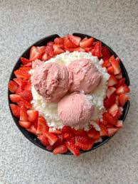
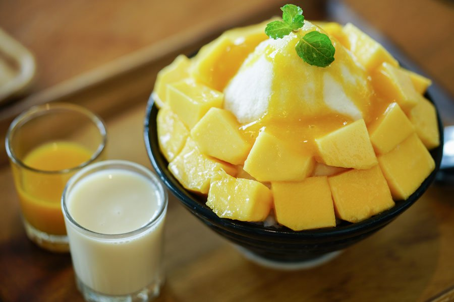
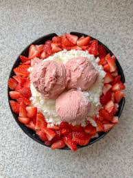
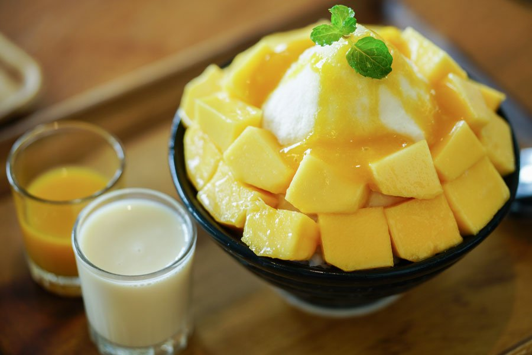

Bingsu Hàn Quốc
Món tráng miệng mát lạnh "đỉnh của chóp" đến từ Hàn Quốc – sự kết hợp hoàn hảo giữa đá bào sữa tuyết mịn màng cùng đa dạng các loại topping tươi ngon, tạo nên hương vị thơm ngon, đẹp mắt và cực kỳ sảng khoái, giải nhiệt trong những ngày nóng bức.
 



Nguyên liệu
-
Phần đá bào sữa tuyết:
- Sữa tươi không đường: 500ml (hoặc sữa tươi có đường tùy thích)
- Sữa đặc: 50-100ml (điều chỉnh độ ngọt)
- Vani: 1/2 thìa cà phê (tùy chọn, để tăng hương thơm)
-
Topping (tùy chọn, đa dạng theo sở thích):
- Hoa quả tươi: Xoài chín cắt hạt lựu, dâu tây cắt lát, kiwi, dưa hấu, chuối...
- Đậu đỏ sên: 100-150g (đã nấu chín và sên ngọt)
- Bánh gạo nếp dẻo (Tteok): Luộc chín, cắt miếng nhỏ
- Thạch các loại: Thạch dừa, thạch rau câu, trân châu...
- Ngũ cốc: Ngũ cốc ăn sáng, hạt hạnh nhân, hạt điều rang...
- Kem vani hoặc kem tươi đánh bông: 1-2 viên hoặc một lượng vừa đủ
- Sốt: Sốt chocolate, sốt caramel, sốt dâu tây, sốt xoài...
- Bột matcha, bột cacao (để rắc lên)
Cách làm
-
Bước 1: Chuẩn bị đá sữa tuyết
- Trong một tô lớn, hòa tan sữa đặc vào sữa tươi không đường. Thêm vani nếu dùng. Khuấy đều cho đến khi sữa đặc tan hoàn toàn.
- Đổ hỗn hợp sữa này vào các khay đá viên hoặc túi ziplock, sau đó cho vào ngăn đông tủ lạnh ít nhất 4-6 tiếng hoặc qua đêm cho đến khi đông cứng hoàn toàn.
- Đối với Bingsu chuẩn vị, bạn có thể đông lạnh trực tiếp hỗn hợp sữa trong một hộp lớn và dùng máy bào đá chuyên dụng để bào thành tuyết. Nếu không có máy bào đá chuyên dụng, dùng máy xay sinh tố công suất lớn để xay đá viên sữa đông lạnh thành dạng tuyết mịn. Để đá không bị tan nhanh, nên xay nhanh và chia thành nhiều mẻ nhỏ.
-
Bước 2: Chuẩn bị Topping
- Rửa sạch các loại hoa quả tươi, gọt vỏ (nếu cần) và cắt thành miếng vừa ăn hoặc hạt lựu.
- Nếu dùng đậu đỏ sên, hãy đảm bảo đậu đỏ đã được nấu chín mềm và sên ngọt vừa phải.
- Luộc chín bánh gạo nếp dẻo (tteok) theo hướng dẫn trên bao bì, sau đó vớt ra và ngâm vào nước lạnh để không bị dính. Cắt thành miếng nhỏ.
- Chuẩn bị các loại thạch, ngũ cốc, kem và sốt sẵn sàng để trang trí.
-
Bước 3: Hoàn thành Bingsu
- Lấy đá sữa tuyết đã bào mịn ra từ máy xay hoặc máy bào đá. Cho đá vào một tô lớn hoặc ly phục vụ. Bạn có thể tạo hình chóp núi cho đẹp mắt.
- Rưới một lớp sữa đặc mỏng lên bề mặt đá tuyết để tăng thêm độ ngọt và độ ẩm.
- Bắt đầu xếp các loại topping đã chuẩn bị lên xung quanh và trên đỉnh của núi đá tuyết. Sắp xếp sao cho đẹp mắt và hài hòa về màu sắc.
- Nếu dùng kem vani, đặt một viên kem lên trên cùng. Nếu dùng kem tươi đánh bông, có thể bắt kem xung quanh viền hoặc trên đỉnh.
- Cuối cùng, rưới thêm sốt chocolate, sốt trái cây hoặc rắc bột matcha/cacao tùy thích để hoàn thiện món Bingsu.
-
Bước 4: Thưởng thức
- Bingsu ngon nhất khi được thưởng thức ngay lập tức để cảm nhận độ mát lạnh và mịn màng của đá tuyết cùng các loại topping tươi ngon.
- Khi ăn, trộn đều các lớp đá và topping để hương vị hòa quyện vào nhau.
Mẹo nhỏ để Bingsu ngon hơn:
- Đá sữa tuyết mịn: Để có đá bào mịn như tuyết, bạn nên đông lạnh hỗn hợp sữa trong khay đá viên nhỏ hoặc túi ziplock mỏng. Sử dụng máy xay sinh tố công suất lớn hoặc máy bào đá chuyên dụng.
- Độ ngọt của sữa: Điều chỉnh lượng sữa đặc theo khẩu vị. Bạn có thể thêm một chút đường vào hỗn hợp sữa trước khi đông lạnh nếu muốn ngọt hơn.
- Topping đa dạng: Đừng ngại sáng tạo với các loại topping. Ngoài hoa quả tươi, bạn có thể thêm bánh oreo đập vụn, kẹo dẻo, các loại mứt, hoặc thậm chí là bánh quy giòn.
- Trang trí: Sắp xếp topping một cách nghệ thuật sẽ làm món Bingsu thêm phần hấp dẫn và bắt mắt.
- Thưởng thức ngay: Bingsu rất dễ tan, vì vậy hãy thưởng thức ngay sau khi làm xong để cảm nhận trọn vẹn hương vị và độ mát lạnh.
▶️ Xem video hướng dẫn chi tiết
← Quay lại trang chủ
Bình luận và Đánh giá
Đánh giá của bạn
Chưa có bình luận nào.